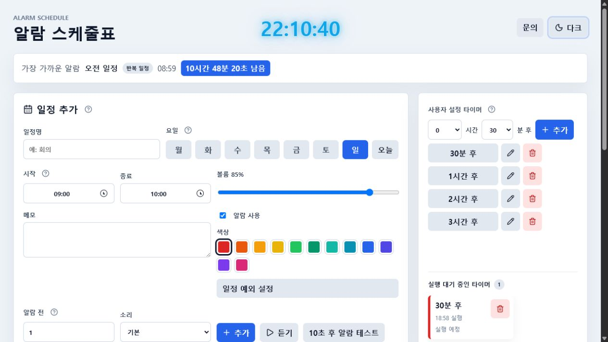
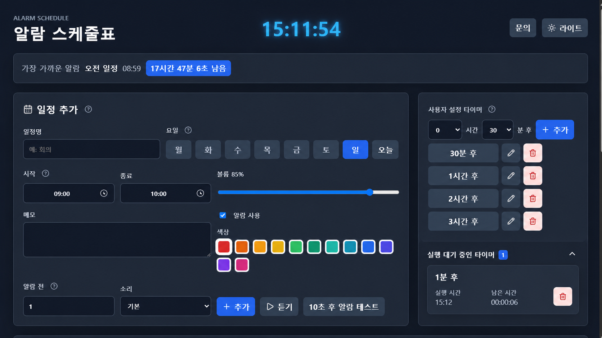
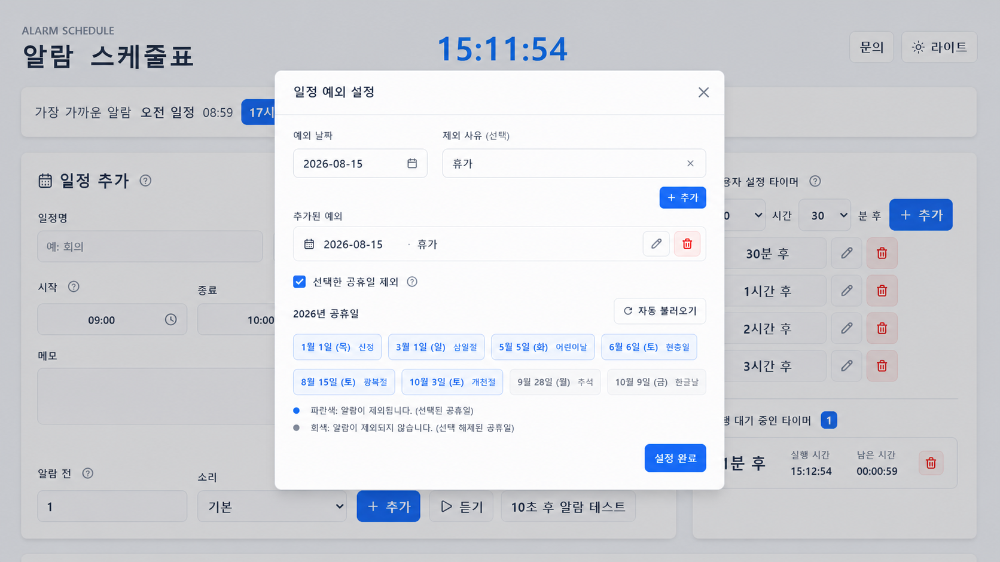
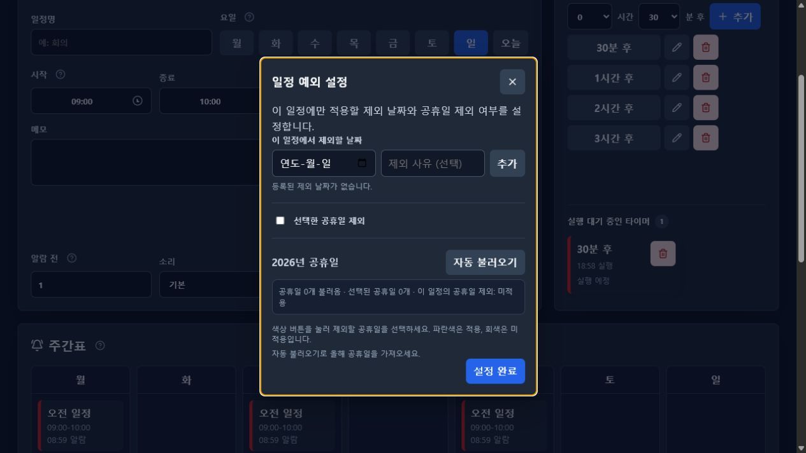
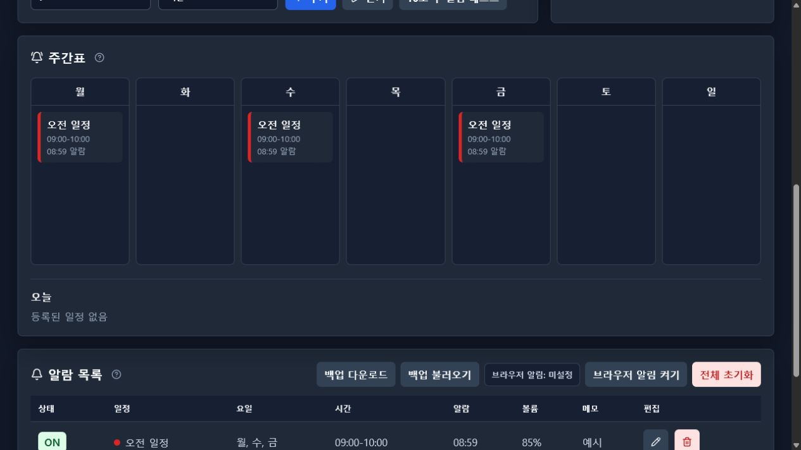
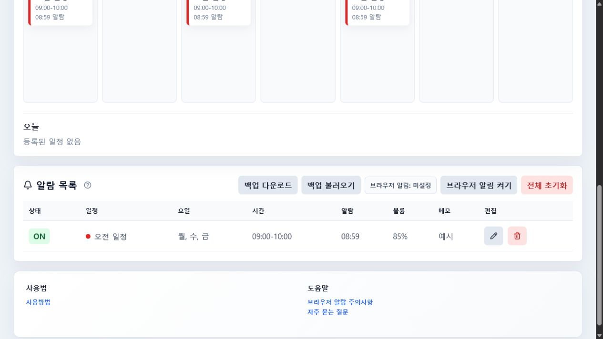
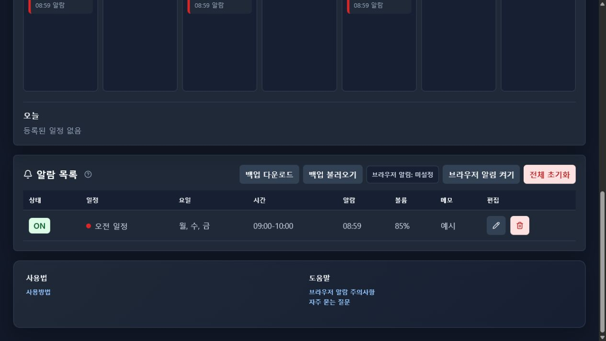

1. 화면 테마와 예시 이미지
오른쪽 위의 테마 버튼으로 라이트 모드와 다크 모드를 전환할 수 있습니다. 이 페이지도 앱의 테마 설정을 따라가며, 아래 예시 이미지 역시 현재 테마에 맞는 화면을 보여줍니다.
- 라이트 모드: 흰색 패널과 밝은 입력 영역을 사용합니다.
- 다크 모드: 어두운 배경과 높은 대비의 입력 영역을 사용합니다.
- 테마 설정은 브라우저에 저장되어 다음 방문에도 유지됩니다.
2. 메인 화면의 구성
메인 화면은 일정 입력 영역, 사용자 설정 타이머, 주간표, 오늘의 일정, 알람 목록으로 나뉩니다. 아래 번호는 일정 등록에 필요한 핵심 위치입니다.

123456
1234563. 반복 일정 등록하기
- 1
일정명을 입력합니다
수업, 출근, 운동, 회의처럼 주간표에서 바로 알아볼 수 있는 이름을 입력합니다. 일정명은 알람이 울릴 때 화면과 브라우저 알림에도 표시됩니다.
- 2
반복 요일을 선택합니다
월요일부터 일요일까지 알람을 울릴 요일을 선택합니다. 여러 요일을 동시에 선택할 수 있습니다. 오늘 버튼을 누르면 현재 요일을 빠르게 선택할 수 있습니다.
- 3
시작·종료 시간과 볼륨을 정합니다
시작 시간을 고르면 종료 시간은 기본적으로 한 시간 뒤로 맞춰집니다. 종료 시간은 직접 바꿀 수 있으며, 자정을 넘기는 일정도 지원합니다. 볼륨 슬라이더는 알람 소리 크기를 0%부터 100%까지 조절합니다.
- 4
메모를 입력합니다
메모에는 장소, 준비물, 업무 내용처럼 일정에 필요한 정보를 적습니다. 입력한 메모는 주간표와 알람 목록에서 해당 일정과 함께 확인할 수 있습니다.
- 5
알람 사용·색상·알람 조건을 설정합니다
알람 사용을 끄면 일정 정보는 남아 있지만 알람은 울리지 않습니다. 색상은 주간표와 알람 목록에서 일정을 구분하는 왼쪽 테두리 색입니다. 알람 전 입력값은 시작 시각보다 몇 분 먼저 알릴지 정하고, 소리 선택 후 듣기로 미리 확인할 수 있습니다. 일정 예외 설정에서는 특정 날짜와 공휴일 제외 여부를 설정합니다.
- 6
사용자 설정 타이머를 관리합니다
오른쪽 패널에서 원하는 시간 뒤에 한 번만 울리는 타이머를 추가할 수 있습니다. 추가된 타이머는 실행 대기 영역에 표시되며, 반복 일정과 별도로 작동합니다.
입력 후 일정 추가를 누릅니다
1~5번 항목을 확인한 뒤 일정 추가를 누릅니다. 저장된 반복 일정은 주간표와 알람 목록에 나타납니다. 같은 요일·시작·종료 시간의 반복 일정은 중복 등록할 수 없습니다.
알람 전 0분
시작 시각에 알람이 울립니다.
알람 전 5분
시작 5분 전에 알람이 울립니다.
색상 선택
기능을 바꾸는 값이 아니라 일정 식별용 색상입니다.
중복 경고
같은 시간에 여러 알람이 필요한 경우에도 실제 알람 시간 충돌을 안내합니다.
4. 일정 예외 설정
반복 일정은 유지하면서 특정 날짜만 건너뛰고 싶을 때 일정 예외 설정을 사용합니다. 일정 추가 화면의 일정 예외 설정 버튼을 누르면 팝업이 열립니다.
- 날짜를 선택하고 필요하면 제외 사유를 입력한 뒤 추가를 누릅니다.
- 예: 출장, 휴가, 임시 휴강, 병원 방문.
- 등록된 날짜는 주간표에서 숨겨지지 않고 제외 사유와 함께 취소선 또는 제외 표시로 남습니다.
- 공휴일 제외를 켜면 아래에서 파란색으로 선택한 공휴일만 해당 일정에서 제외됩니다.
- 설정 완료를 눌러야 저장됩니다. 변경 후 X나 바깥 영역으로 닫으면 저장 여부를 확인하는 알림이 표시됩니다.
- 저장하지 않고 닫기를 선택하면 팝업을 연 시점의 설정으로 되돌아갑니다.


5. 공휴일 불러오기와 선택
공휴일 영역의 자동 불러오기를 누르면 현재 연도의 공휴일을 공공데이터 API에서 가져옵니다. 수동으로 날짜를 입력하는 기능은 제공하지 않으며, 자동으로 가져온 목록에서 필요한 날짜만 선택합니다.
- 파란색 공휴일: 공휴일 제외에 포함됩니다.
- 회색 공휴일: 목록에는 남아 있지만 알람 제외에는 포함되지 않습니다.
- 공휴일 이름을 함께 표시하므로 날짜를 확인하기 쉽습니다.
- 공휴일을 다시 불러와도 이미 선택한 ON/OFF 상태는 같은 날짜에 한해 유지됩니다.
- 공휴일 목록은 현재 연도 기준으로 관리됩니다.
6. 사용자 설정 타이머
사용자 설정 타이머는 반복 일정이 아닌 1회성 알람입니다. 현재 시각에서 원하는 시간 뒤에 한 번만 울리는 일정이 만들어집니다.
- 1
시간과 분을 선택합니다
상단 입력에서 몇 시간 몇 분 뒤에 울릴지 선택합니다. 예를 들어 0시간 25분은 현재 시각 기준 약 25분 뒤에 울립니다.
- 2
추가 버튼을 누릅니다
저장된 빠른 타이머 버튼을 누르면 1회성 타이머가 생성됩니다. 자주 쓰는 시간은 입력값을 추가해 별도 버튼으로 저장할 수 있습니다.
- 3
하단 대기 영역에서 확인합니다
실행 대기 중인 타이머는 사용자 설정 타이머 패널 하단에 표시됩니다. 가장 가까운 실행 순서로 정렬되며, 많아지면 이 영역만 가로 스크롤됩니다.
- 4
알람을 멈춥니다
타이머가 울리면 알람 멈춤 버튼을 누릅니다. 1회성 타이머는 알람을 멈춘 뒤 자동으로 삭제됩니다. 울리기 전에는 휴지통 버튼으로 취소할 수 있습니다.
7. 주간표 읽는 방법
주간표는 월요일부터 일요일까지 반복 일정을 배치해 보여줍니다. 일정 카드에는 일정명, 시작·종료 시각, 알람 시각이 표시됩니다.

- 왼쪽 색상 선은 일정 등록 시 선택한 색상입니다.
- 알람이 임박하면 해당 일정 카드와 화면이 반짝입니다.
- 오늘 제외된 일정도 주간표에서 사라지지 않고 제외 이유를 보여줍니다.
- 일정이 OFF이면 일정 정보는 남고 실제 알람만 비활성화됩니다.
8. 알람 목록 관리
알람 목록은 반복 일정을 표 형태로 관리하는 영역입니다. 1회성 타이머는 이 표에 표시되지 않고 사용자 설정 타이머 영역에서만 관리됩니다.


- ON/OFF: 일정은 유지한 채 알람만 잠시 끕니다.
- 연필: 일정명, 요일, 시간, 알람 조건, 예외 설정을 수정합니다.
- 휴지통: 일정을 삭제합니다. 삭제 후에는 백업이 없으면 복구할 수 없습니다.
- 백업 다운로드: 현재 일정, 빠른 타이머, 테마, 공휴일 선택 상태를 JSON 파일로 저장합니다.
- 백업 불러오기: 파일을 읽은 뒤 확인 절차를 거쳐 기존 데이터를 교체합니다.
- 전체 초기화: 모든 일정과 타이머를 삭제하므로 사용 전에 백업을 권장합니다.
9. 브라우저 알람과 실제 동작 조건
앱은 브라우저 화면이 실행되는 동안 시간을 확인해 알람을 울립니다. 브라우저 알림 권한은 알람 목록의 브라우저 알림 켜기 버튼으로 요청할 수 있습니다.
- 알람을 사용하려면 페이지를 닫지 말고 열어 두는 것이 안전합니다.
- 브라우저 알림 권한을 거부한 경우 브라우저 설정에서 다시 허용해야 합니다.
- 컴퓨터 절전, 모바일 브라우저 백그라운드 제한, 탭 강제 종료 중에는 알람이 지연되거나 누락될 수 있습니다.
- 페이지가 백그라운드에 있으면 안내가 표시되며, 복귀 후 놓친 알람이 있으면 알려줍니다.
- 알람이 울리면 상단 알람 영역과 해당 일정 카드가 강조되고, 알람 멈춤 버튼으로 중지할 수 있습니다.
10. 활용 예시
공부
월·수·금 19:00부터 50분 공부 일정을 반복 등록하고, 사용자 타이머로 10분 휴식을 한 번 추가합니다.
수업·회의
반복되는 수업이나 회의를 등록한 뒤, 휴강일은 예외 날짜와 사유를 추가합니다.
운동
요일별 운동 시간을 색상으로 구분하고 알람 전 5분을 설정해 준비 시간을 확보합니다.
생활 관리
복약, 외출 준비, 집안일을 반복 일정으로 만들고 휴가 기간은 예외 날짜로 제외합니다.
11. 문제가 있을 때 확인할 순서
- 1
일정이 오늘 울리는지 확인
요일 선택, ON 상태, 시작 시각, 알람 전 시간을 확인합니다. 오늘 제외 또는 선택 공휴일 제외가 표시되어 있으면 해당 날짜에는 울리지 않습니다.
- 2
브라우저 알림 권한 확인
알람 목록에서 권한 상태를 확인합니다. 차단됨이면 브라우저 주소창의 사이트 권한에서 알림을 허용해야 합니다.
- 3
페이지와 절전 상태 확인
페이지가 열려 있는지, 브라우저가 절전·백그라운드 상태인지 확인합니다. 복귀 후 놓친 알람 안내가 나타날 수 있습니다.
- 4
백업 후 재설정
데이터가 이상하면 먼저 백업 다운로드를 실행한 뒤 필요한 경우 전체 초기화를 사용합니다. 초기화 전에는 반드시 백업 파일을 확인하세요.